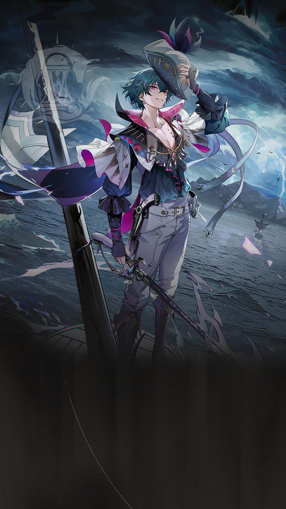

WaveKit
WaveKit

Wuthering Waves Resonator guide
Brant build, teams, weapons, and Echoes
Fusion support/hybrid with comfort value.
Skill priority
Team compositions
 MDPSBrant
MDPSBrant HelperChangli
HelperChangli SupportLupa
MDPSBrantHelperChangli
SupportLupa
MDPSBrantHelperChangli SupportShorekeeper
MDPSBrantHelperLupa
SupportShorekeeper
MDPSBrantHelperLupa SupportVerina
SupportVerina
Brant guide overview
Brant is a Fusion hybrid dps in Wuthering Waves. This WaveKit guide focuses on the practical build choices most players need first: weapon options, Sonata and Echo setup, stat priority, simple rotation notes, and team shells that make sense for real accounts.
Quick build
- Role
- Hybrid DPS
- Team type
- Fusion Hybrid
- Best weapon
- Unflickering Valor
- Alternate weapons
- Emerald of Genesis / Commando of Conviction / Lunar Cutter
- Sonata
- Tidebreaking Courage
- Echo cost
- 4-3-3-1-1
- Main Echo
- Dragon of Dirge
- Main stats
- CRIT Rate or CRIT DMG / Energy Regen or Fusion DMG / ATK%
Stat priority
- CRIT Rate / CRIT DMG balance
- Fusion DMG or ATK%
- ATK% or HP% if the kit scales that way
- Energy Regen only if the rotation needs it
Team direction
Brant can play damage or comfort utility inside Fusion teams.
Useful teammates
Simple play pattern
- Use Brant as a setup piece: apply their buff, effect, or off-field pressure first.
- Swap back to the carry once their useful window is active.
- If their setup feels late, add Energy Regen before chasing more damage.
Build priority
- Difficulty
- Beginner friendly
- Safety
- Utility support
- Data note
- Guide checked
Brant is most valuable when their buff, element, or mechanic matches the carry you want to build.
Brant FAQ
What is the best Brant build in Wuthering Waves?
Brant's recommended WaveKit setup is Fusion DPS Build, using Unflickering Valor, Tidebreaking Courage, and Dragon of Dirge as the main Echo target.
What stats should Brant use?
Start with CRIT Rate or CRIT DMG / Energy Regen or Fusion DMG / ATK%. If the rotation feels uncomfortable, improve Energy Regen or defensive comfort before chasing perfect substats.
What teams work with Brant?
A strong reference shell is Brant / Changli / Lupa. WaveKit can also suggest owned alternatives through the team helper.
Is Brant beginner friendly?
Brant's current difficulty is listed as Beginner friendly. If you are learning, pair them with safer sustain or defensive support.